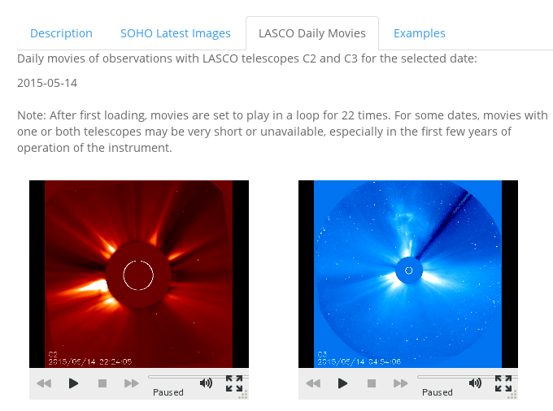
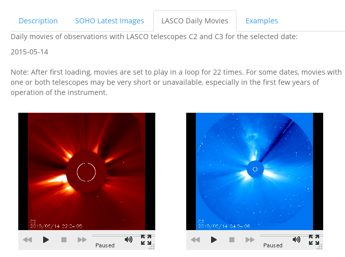

Observations of the Sun are carried out continuously from space to study the solar structure and activity.
The ESA/NASA mission SOHO (Solar and Heliospheric Observatory) was launched in 1995 and continues to collect data through various instruments.
These data help experts predict "space weather" events such as magnetic storms that may affect human activities on Earth.
We consider the following instruments:
EIT is the Extreme Ultraviolet imaging Telescope and provides images of the Sun at wavelengths 171, 195, 284, and 304 Angstrom.
LASCO is the Large Angle and Spectrometric Coronograph Experiment and provides images of the solar corona through 2 telescopes (C2 and C3). The view of the Sun itself is blocked.
 
